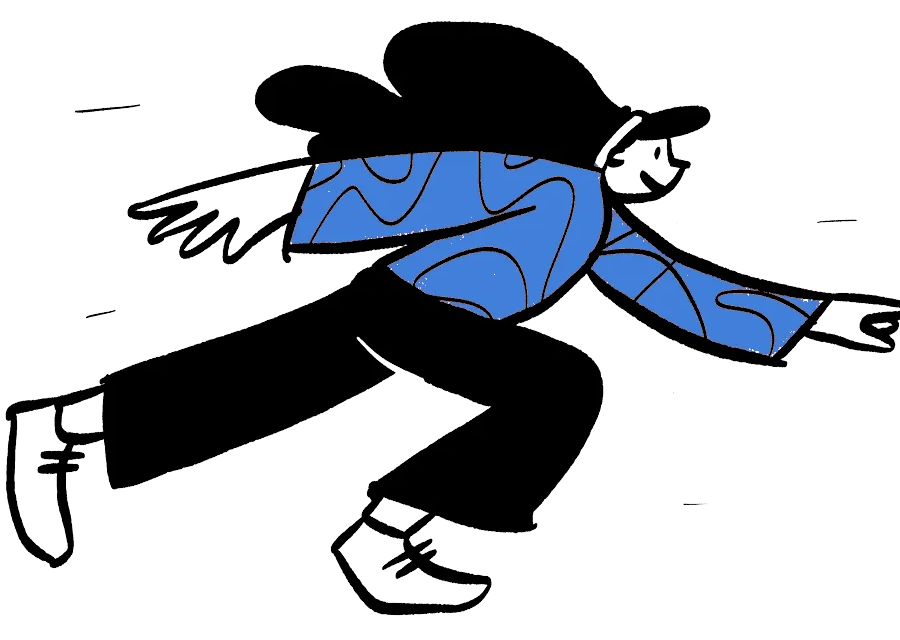
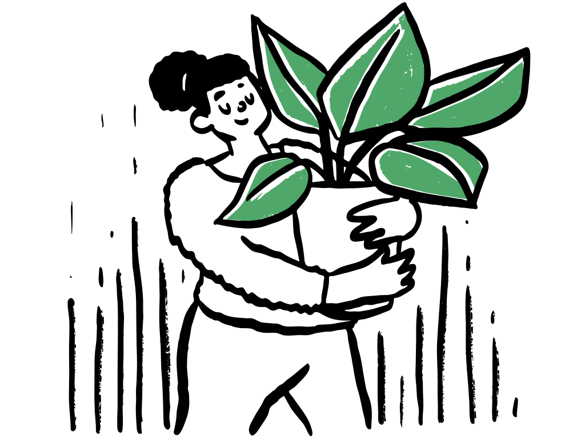

sitting-reading · A/B luân phiên (bản đã bỏ quay đầu)
sitting-reading · A/B luân phiên (bản đã bỏ quay đầu)Lab chuyển động cho nhân vật & asset
So sánh 4 kỹ thuật để chọn cách "cho nhân vật cử động" hợp phong cách vẽ tay. Thêm ?static&f=30 để chụp khung số 30 của Lottie.
A · Hoạt hình từng khung (Open Doodles animated — LottieFiles, Lottie Simple License) → WebP động, tô lại màu
60 khung, 33 fps, có alpha. Đúng hai nhân vật đang dùng ở hero. Không cần JS: chỉ là <img>.
sitting-reading · A/B luân phiên (bản đã bỏ quay đầu) reading-side · gốc bỏ khung chớp
reading-side · gốc bỏ khung chớp
sprinting · 4 khung (Open Doodles GIF gốc, tách nền)B · Lottie vector (LottieFiles, miễn phí) — phát bằng lottie-web
Kiểm tra phong cách có hợp "vẽ tay" không; màu có thể đổi trong JSON.
pencil-drawing (Abdul Latif)
graduation (Mithril)
online-test (Mithril)
curved-arrow (Habib Rahal)
C · "Line boil" — làm nét vẽ tĩnh rung nhẹ như hoạt hình tay (SVG filter, 8 fps)
Dùng được cho MỌI doodle tĩnh đang có (SVG). Bên trái: tĩnh; bên phải: boil.
 meditating · tĩnhmeditating · boil
meditating · tĩnhmeditating · boil
plant · tĩnhplant · boil
D · Icon tính năng cử động khi hover / khi hiện (GSAP)
Giữ bộ icon Iconoodle hiện tại, thêm cử động có nghĩa: mây đẩy mũi tên lên, nút bản đồ nảy, bút chì viết, tên lửa bay, bong bóng nói lắc, dấu check vẽ.